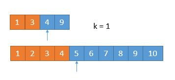

题目
给定两个大小为 m 和 n 的正序（从小到大）数组 nums1 和 nums2。请你找出并返回这两个正序数组的中位数。
进阶：你能设计一个时间复杂度为 O(log (m+n)) 的算法解决此问题吗？
示例 1：
1 | 输入：nums1 = [1,3], nums2 = [2] |
示例 2：
1 | 输入：nums1 = [1,2], nums2 = [3,4] |
示例 3：
1 | 输入：nums1 = [0,0], nums2 = [0,0] |
示例 4：
1 | 输入：nums1 = [], nums2 = [1] |
示例 5：
1 | 输入：nums1 = [2], nums2 = [] |
提示：
nums1.length == mnums2.length == n0 <= m <= 10000 <= n <= 10001 <= m + n <= 2000-10^6 <= nums1[i], nums2[i] <= 10^6
分析
这里转载下面一篇题解。
作者：windliang
链接：https://leetcode-cn.com/problems/median-of-two-sorted-arrays/solution/xiang-xi-tong-su-de-si-lu-fen-xi-duo-jie-fa-by-w-2/
来源：力扣（LeetCode）
著作权归作者所有。商业转载请联系作者获得授权，非商业转载请注明出处。
题目规定的时间复杂度是 $O(log(m+n))$，而 log 这个复杂度，只有使用二分算法才可以达到。
我们可以换一种思路，题目要求是求中位数，其实就是求第 $k$ 小数的一种特殊情况，而求第 $k$ 小的数有一种非常优秀的算法。
对于两个有序数组，如果我们要从中找出第 $k$ 小的数，那么我们可以一半儿一半儿的排除掉不符合条件的数，每次去掉 $k / 2$ 个数。例如下面的例子
假设我们要找第 $7$ 小的数

我们比较两个数组的第 k/2 个数字，如果 k 是奇数，向下取整。也就是比较第 3 个数字，上边数组中的 4 和下边数组中的 3，如果哪个小，就表明该数组的前 k/2 个数字都不是第 k 小数字，所以可以排除。也就是 1，2，3 这三个数字不可能是第 7 小的数字，我们可以把它排除掉。将 1349 和 45678910 两个数组作为新的数组进行比较。
更一般的情况 A[1] ，A[2] ，A[3]，A[k/2] … ，B[1]，B[2]，B[3]，B[k/2]… ，如果 A[k/2]<B[k/2] ，那么A[1]，A[2]，A[3]，A[k/2] 都不可能是第 k 小的数字。
橙色的部分表示已经去掉的数字。

由于我们已经排除掉了 3 个数字，就是这 3 个数字一定在最前边，所以在两个新数组中，我们只需要找第 7 - 3 = 4 小的数字就可以了，也就是 k = 4。此时两个数组，比较第 2 个数字，3 < 5，所以我们可以把小的那个数组中的 1 ，3 排除掉了。

我们又排除掉 2 个数字，所以现在找第 4 - 2 = 2 小的数字就可以了。此时比较两个数组中的第 k / 2 = 1 个数，4 == 4，怎么办呢？由于两个数相等，所以我们无论去掉哪个数组中的都行，因为去掉 1 个总会保留 1 个的，所以没有影响。为了统一，我们就假设 4 > 4 吧，所以此时将下边的 4 去掉。

由于又去掉 1 个数字，此时我们要找第 1 小的数字，所以只需判断两个数组中第一个数字哪个小就可以了，也就是 4。
所以第 7 小的数字是 4。
我们每次都是取 k/2 的数进行比较，有时候可能会遇到数组长度小于 k/2的时候。

此时 k / 2 等于 3，而上边的数组长度是 2，我们此时将箭头指向它的末尾就可以了。这样的话，由于 2 < 3，所以就会导致上边的数组 1，2 都被排除。造成下边的情况。
由于 2 个元素被排除，所以此时 k = 5，又由于上边的数组已经空了，我们只需要返回下边的数组的第 5 个数字就可以了。
从上边可以看到，无论是找第奇数个还是第偶数个数字，对我们的算法并没有影响，而且在算法进行中，k 的值都有可能从奇数变为偶数，最终都会变为 1 或者由于一个数组空了，直接返回结果。
所以我们采用递归的思路，为了防止数组长度小于 k/2，所以每次比较 min(k/2，len(数组) 对应的数字，把小的那个对应的数组的数字排除，将两个新数组进入递归，并且 k 要减去排除的数字的个数。递归出口就是当 k=1 或者其中一个数字长度是 0 了。
代码
1 | public double findMedianSortedArrays(int[] nums1, int[] nums2) { |